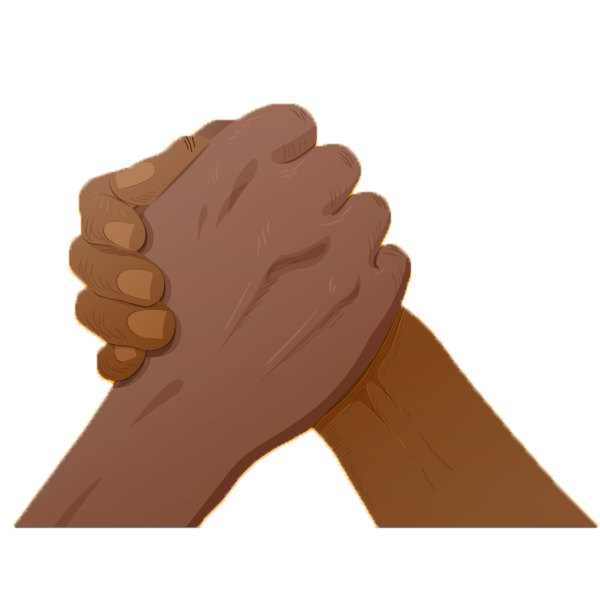
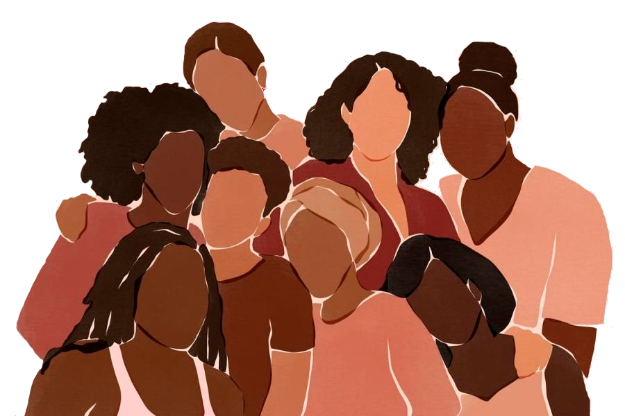

<html lang="en">
<head>
    <meta charset="UTF-8">
    <meta http-equiv="X-UA-Compatible" content="IE=edge">
    <meta name="viewport" content="width=device-width, initial-scale=1.0">
    <title>Consciência Racial</title>

<body>
    <h1>Consciência Racial</h1>

    <p>
        Projeto voltado a integração de duas paixões: Tecnologia e Causas Sociais. Como proposta de conclusão de curso da Academia.Net, um projeto da empresa Atos que visa formar novos desenvolvedores.
    </p> 

    <p>
        Este trabalho teve como fonte principal o e-Book - Consciência Racial (elaborado pelos colaboradores da Atos) pode ser acessado  
        
        <button>Clicando aqui</button>

        

        
    </p> 

    <p>
        <h1>Consciência Racial</h1>

        Você sabe o porquê comemoramos o Dia da
Consciência Negra?

Dia 20 de novembro é uma data referência à
morte de Zumbi do Palmares, líder negro do
quilombo dos palmares que lutou contra a
escravidão no Brasil. Essa data homenageia toda
a luta Zumbi e seus companheiros no quilombo,
e celebra a importância de refletir sobre a
posição dos negros na sociedade. Afinal, as
gerações de afro-brasileiras que sucederam a
época de escravidão sofreram (e ainda sofrem)
diversos níveis de preconceito.
Mesmo após a abolição da escravidão em 1888,
a busca pela igualdade entre negros e brancos
jamais terminou. Até porque, a falta de direitos e
os alto nível de discriminação eram sentidos em
todas as áreas, e só após muita luta que o negro
conseguiu ser inserido na realidade que muitos
brancos já viviam, como por exemplo: entrar em
uma universidade.
O dia da consciência negra evidencia as
desigualdades e violências contra a população
negra, e isso vai além das comemorações, esse
dia proporciona a reflexão sobre a importância
que os negros possuem dentro o
desenvolvimento da cultura brasileira.
Para retratar um pouco da história dos negros e
também a sua representatividade no mercado,
trouxemos neste e-Book temas que precisamos
discutir!


    </p>
    <h1>Black Lives Matter</h1>
    <h1>Vidas Negras Importam</h1>
    <h4>#BLACKLIVESMATTER</h4>
    <p>
        Dia 20 de novembro é uma data referência à
        morte de Zumbi do Palmares, líder negro do
        quilombo dos palmares que lutou contra a
        escravidão no Brasil. Essa data homenageia toda
        a luta Zumbi e seus companheiros no quilombo,
        e celebra a importância de refletir sobre a
        posição dos negros na sociedade. Afinal, as
        gerações de afro-brasileiras que sucederam a
        época de escravidão sofreram (e ainda sofrem)
        diversos níveis de preconceito.
        Mesmo após a abolição da escravidão em 1888,
        a busca pela igualdade entre negros e brancos
        jamais terminou. Até porque, a falta de direitos e
        os alto nível de discriminação eram sentidos em
        todas as áreas, e só após muita luta que o negro
       conseguiu ser inserido na realidade que muitos
       brancos já viviam, como por exemplo: entrar em
       uma universidade.
       O dia da consciência negra evidencia as
       desigualdades e violências contra a população
       negra, e isso vai além das comemorações, esse
       dia proporciona a reflexão sobre a importância
       que os negros possuem dentro o
       desenvolvimento da cultura brasileira.
       Para retratar um pouco da história dos negros e
       também a sua representatividade no mercado,
       trouxemos neste e-Book temas que precisamos
       discutir!
    </p>

</p>

<h1>Colorismo</h1>

Não há como um sujeito se reconhecer de forma 
positiva se a sociedade em que ele está inserido 
produz, a cerca de seu grupo, estereótipos, preconceitos e discriminações. A negação de uma 
identidade racial pode trazer inúmeras consequências, como o sofrimento e um não pertencimento ou uma necessidade de identificação 
racial. Se em 2006, 48% dos brasileiros se autodeclararam pretos, em 2018 esse percentual atingiu mais de 55% da população do país, segundo 
dados do IBGE. Esse aumento pode ser atribuído 
ao progresso do autorreconhecimento em busca 
de aceitação. 
O colorismo ou a pigmentocracia, é, portanto, 
discriminação racial baseada exclusivamente em 
fenótipos e tons de pele muito comuns em países que sofreram a colonização europeia e em 
países pós escravocratas. O termo quer dizer que 
quanto mais pigmentada uma pessoa, mais 
exclusão e discriminação essa pessoa irá sofrer. 
Um aspecto muito importante no Colorismo é, a 
pessoa negra é tolerada, mas não aceita, pois 
aceitá-la seria reconhecer que a diferença é existente e que vencer o preconceito que se tem 
sobre essa “diferença” tenha que ser vencido. 
Eu mesma passei por isso, desde novinha morei 
com a família de minha tia onde a família era toda 
branca e nunca entendi por que o tom da minha 
pele era mais escuro. Na minha vida, nunca me 
achei parecida com ninguém e dentro desse convívio familiar sofri racismo, infelizmente. Minha 
mãe de pele branca, foi mãe solo e me criou sem 
eu ter acesso à nenhuma informação sobre meu 
pai biológico. Quis o destino proporcionar e há 
dois anos basicamente, tive a oportunidade de conhecer meus dois irmãos por parte de pai e 
também conheci meu pai. Três negros, eu era a 
quarta que completava uma história toda de 
vida. Descobri neles parte da minha identidade, a 
parte da família negra que me representava e 
que me fez entender e reconhecer a minha raça. 
Nunca imaginei que tivesse alguém parecido 
comigo, porque nunca teve. Parece que nasci 
novamente no dia em que eu os encontrei e me 
encontrei também. Eu acredito que ao longo dos 
próximos anos nem iremos mais escutar sobre 
isso, pois tenho esperança que todos possam ser 
vistos como pessoas e não cores.




</html>{\rtf1}